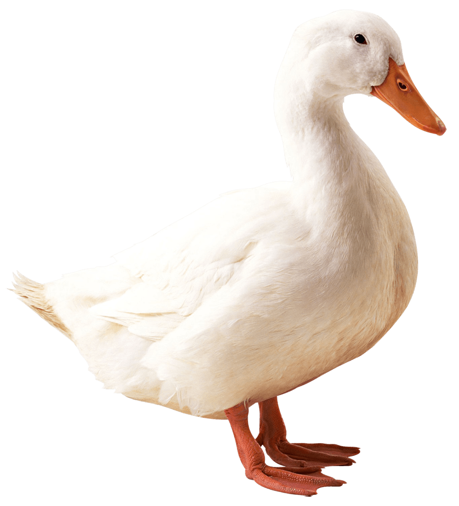

Ave palmípeda de plumaje denso, patas cortas y pico más ancho en la punta que en la base,
que vive en estado salvaje o domesticada; nada y bucea muy bien pero camina con torpeza;
Es comestible y muy estimada como pieza de caza; hay muchas especies, que varían en tamaño y color.
Esta imagen muestra un grandioso pato blanco.

Por otro lado, tenemos una cancion muy especial que la dedicaron a todos los patos.
Lo raro es que esta cancion no menciona por ningun lado la palabra "Pato";
Escuchemosla:
Ir a pagina 1 y ver:
Listado de artistas
Ir a pagina 2 y ver:
Video Duck Famous